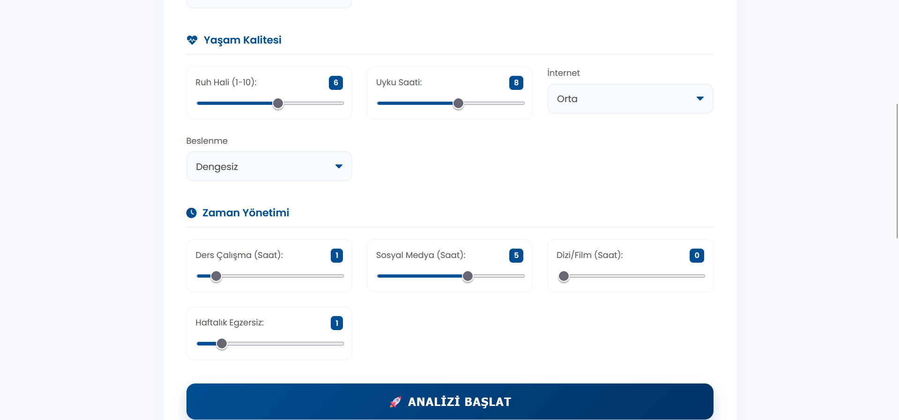
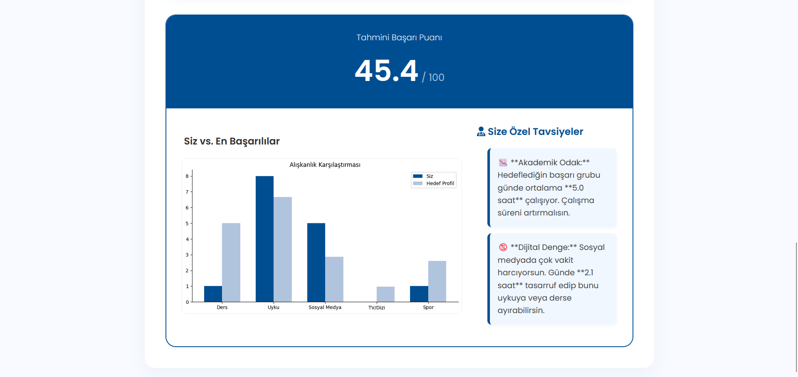

AI Student Coach: Akademik Başarı Asistanı
🧠 Scikit-Learn
🐼 Pandas
🌶️ Flask
📈 Matplotlib
Proje Galerisi



Proje Özeti
Bu uygulama, öğrencinin yaşam alışkanlıklarını analiz eder ve onu "Başarılı Öğrenci" profilleriyle kıyaslar. Aradaki farkı analiz ederek "Günlük çalışma rutinini 1 saat artır" gibi net hedefler koyar.
Veri Akışı
graph LR
A[Form Verisi] -->|POST| B(Flask)
B -->|Preprocess| C[StandardScaler]
C --> D[Regresyon Modeli]
C --> E[KNN Benzerlik Modeli]
D -->|Tahmin| F[Sonuç]
E -->|Fark Analizi| G[Tavsiyeler]
Örnek Kod: Grafik Üretimi
import matplotlib
matplotlib.use('Agg') # GUI hatasını önler
import matplotlib.pyplot as plt
def create_chart():
# ... grafik çizim kodları ...
img = io.BytesIO()
plt.savefig(img, format='png')
img.seek(0)
return base64.b64encode(img.getvalue()).decode()